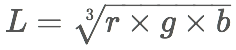
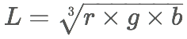

Color Lightness Test
Select a color from the picker in order to determine whether it's considered light or dark using the different algorithms below. Text color will be opposite of the lightness test result.
You can also set the lightness treshold value for different results:
 
